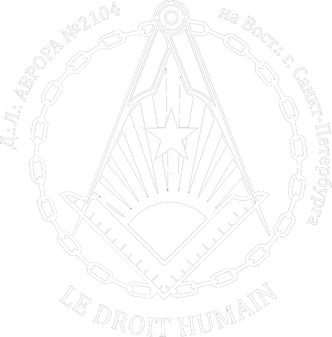

Данная ложа в Санкт-Петербурге работает на постоянной основе и проводит свои собрания в один из выходных дней месяца. Для того, чтобы вступить в масонскую ложу в Санкт-Петербурге, следует направить прошение о вступлении на указанный ниже электронный адрес.
Масонство в Санкт-Петербурге
Достопочтенная Ложа "Аврора" №2104

Нас часто спрашивали, есть ли в Санкт-Петербурге Ложа нашего Ордена. Мы получали прошения из этого города, но долгое время на вопрос: «Есть ли масоны в Петербурге?» нам приходилось перенаправлять прошения в те или иные дружественные масонские Послушания (а надо сказать, что, традиционно, масонские ложи в Санкт-Петербурге весьма многочисленны — это единственный город в России, в котором представлены все российские Послушания). Но время шло, мы активно работали и, после долгих трудов, встреч, дискуссий и дебатов, мы вплотную подошли к открытию Ложи нашего Ордена в Северной Столице.
14 сентября 2019 г. e:.v:. на Вост:. г. Санкт-Петербурга состоялось торжественное событие — церемония Зажжения Огней Достопочтенной Ложи “Аврора” №2104 Масонского Смешанного Международного Ордена LE DROIT HUMAIN (“Право Человека”).
Мастерская получила свое название в честь русскоязычной Ложи “Аврора” №840, работавшей в Париже с 1927 по 1939 гг. и состоявшей из русских иммигрантов.
Церемонию возглавила Светлейшая Сестра К. Ш.-В., Великий Канцлер Ордена, при участии Великого Командора Финской Федерации Ордена. После глубоко символической церемонии, основанной на традициях оперативных вольных каменщиков, Досточтимому Мастеру, которым стала Сестра Н.З., была передана Хартия новой Мастерской, дающая право на работы в Древнем и Принятом Шотландском Уставе а также исторический документ — копия учредительной Хартии Достопочтенной Ложи “Аврора” №840.
После того, как прозвучали приветственные речи от Сестер и Братьев нашего Ордена (а на церемонии присутствовали не только русские вольные каменщики из “Нового Света” №1989 и “Коронованного Льва”, но и масоны из Франции, Бельгии, Голландии, Финляндии, Эстонии), а также представителей дружественных Послушаний — Великого Востока Франции, Великой Женской Ложи Франции, Великой Символической Ложи России и Союзных Стран, Объединенной Великой Ложи России — работы сего дня продолжились праздничным банкетом, на котором прозвучали тосты в честь новой Ложи и всех дружественных Вольных Каменщиков, совместно трудящихся во Славу Великого Архитектора Вселенной и во имя Прогресса Человечества. Масонство в Петербурге обогатилось еще одной Мастерской.